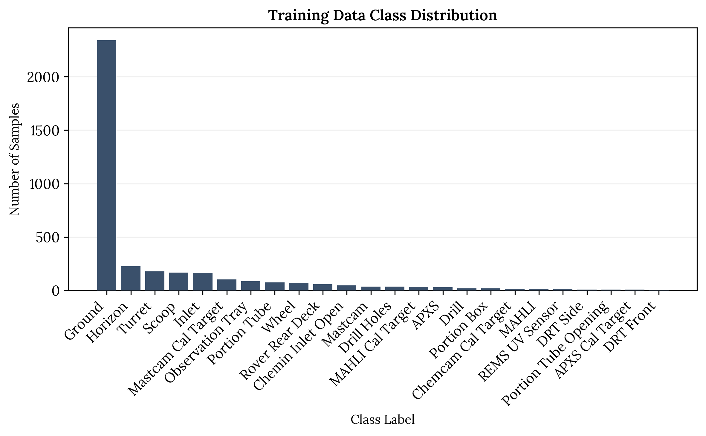
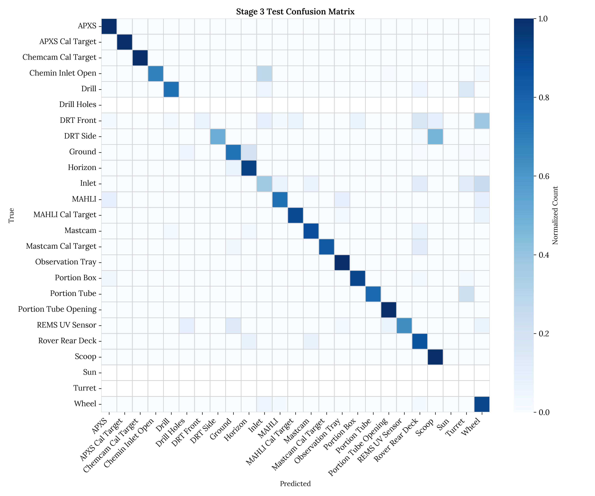
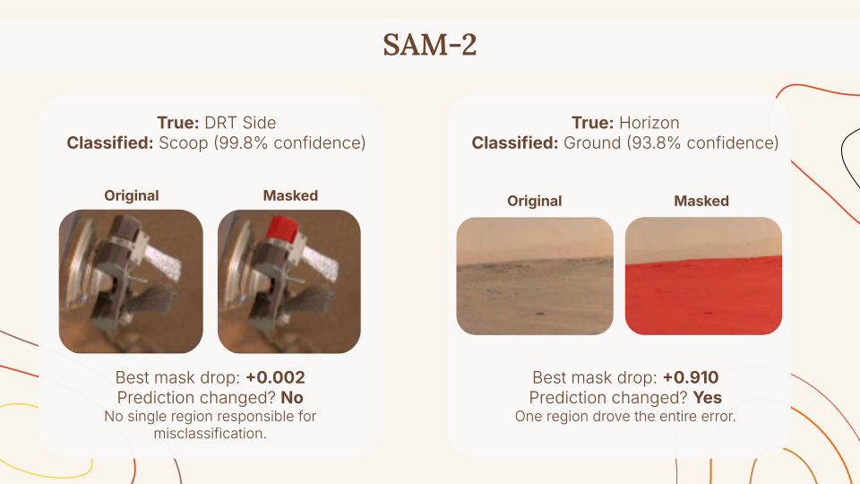
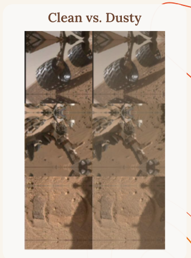

Classifying Curiosity rover images under severe class imbalance with a 3 stage ResNet50 pipeline
Autonomous navigation for Martian rovers requires highly reliable computer vision. However, existing models often over-optimize for the majority of terrain classes, such as background sand, while failing to detect rare but critical minority classes. This project presents a 3-stage transfer learning pipeline using a lightweight ResNet50 architecture to classify Curiosity Rover images while explicitly addressing extreme class imbalance. By enforcing fairness without sacrificing baseline terrain accuracy, our pipeline improved the overall Test Macro-F1 from 0.6131 to 0.6656. This yielded up to a +0.63 F1 improvement on individual minority classes like the REMS UV Sensor. In turn, this architecture achieved a 76.5% final test accuracy as a robust foundation for real-world rover autonomy.
The dataset was collected by Stanboli and Wagstaff at NASA in 2017, from images taken by three of the Curiosity rover's onboard cameras. It has 6,691 images labeled across 24 classes covering surface features (ground, horizon, sun), rover instruments and equipment, and calibration targets.

The classifier was built in TensorFlow/Keras, using a ResNet50 backbone pretrained on ImageNet, adapted to Mars imagery in three stages to incrementally measure contributions:
| Model | Train Acc | Val Acc | Test Acc | Macro F1 |
|---|---|---|---|---|
| Baseline | 0.91 | 0.91 | 0.717 | 0.605 |
| Stage 2 | 0.97 | 0.97 | 0.728 | 0.613 |
| Stage 3 | 0.99 | 0.98 | 0.765 | 0.666 |
Stage 2's high training and validation accuracy was misleading. It came in part from the model memorizing majority classes rather than genuinely learning the rare ones, which is exactly what macro F1 is meant to catch. Stage 3 addressed that directly with class weighting, and the biggest gains showed up on classes with few training examples:
| Class | Train N | Stage 2 F1 | Stage 3 F1 | Change |
|---|---|---|---|---|
| REMS UV Sensor | 12 | 0.15 | 0.78 | +0.63 |
| Observation Tray | 85 | 0.50 | 0.86 | +0.36 |
| Portion Tube | 73 | 0.70 | 0.88 | +0.17 |
| DRT Side | 8 | 0.54 | 0.67 | +0.14 |
| DRT Front | 4 | 0.00 | 0.12 | +0.12 |
The REMS UV Sensor result is a good example of how class weighting re-prioritizes the classifier. A few dominant classes showed a small F1 reduction across stages, though the tradeoff is negligible compared to the overall gain in balance across classes.

The main takeaway is that accuracy alone is not sufficient to tune this model given the extreme class imbalance. Stage 2 looked strong on paper, but that was largely because it defaulted to dominant classes like ground and horizon, where minority classes got absorbed into those categories. Stage 3's class weighting corrected for that bias and pushed real improvement into the underrepresented classes, without significantly sacrificing the majority class scores.
To understand some of the remaining misclassifications, we ran Meta's SAM2 (PyTorch) on a few of the most confused class pairs: DRT Side and Scoop, Ground and Horizon, and Chemin Inlet Open and Inlet. SAM2 segments an image into regions without needing any labels, so we could mask one region at a time, rerun the classifier, and see how much the model's confidence in its wrong prediction changed. This let us localize which part of an image was actually driving an error, without needing pixel level annotations.

These two examples show two different kinds of confusion. For DRT Side classified as Scoop, no single part of the image is responsible, since the two instruments just look alike overall. For Horizon classified as Ground, masking one region drops confidence by 0.910 and flips the prediction back to correct, meaning one specific region (the actual ground present in horizon image) drove the entire error. This illustrates how crucial segmentation analysis can be for understanding misclassifications in order to further improve the model.
We also tested the Stage 3 model on a dust degraded version of the test set, blending in a dust colored overlay, reducing contrast, and adding a slight blur to approximate a dusty camera or a hazy day on Mars. Accuracy dropped from 76.5% to 72.3%, a decline of about 4.2 points. The marginal drop is encouraging given that dust accumulation is a realistic condition for a rover that operates for months or years on the surface.

A few concrete next steps fall directly out of these results: